xConnect Release Notes
- xConnect Release Notes
- Release 2021.12.3: December 30th, 2021
- Release 2021.08.0: August 23rd, 2021
- Release 2021.06.0: June 30th, 2021
- Release 2021.05.0: May 25th, 2021
- Release 2021.04.0: April 26th, 2021
- Minor Release 2021.02.5: March 25th, 2021
- Minor Release 2021.02.4: March 10th, 2021
- Release 2021.02.0: February 6th, 2021
- Release 2020.12.0: December 17th, 2020
- Release 16.0: December 1st, 2020
- Release 15.0: October 15th, 2020
- Release 14.0: September 7th, 2020
- Release 13.1: July 16th, 2020
- Release 13: June 23rd, 2020
Release 2021.12.3: December 30th, 2021
Enhancements
-
Limited Power User Role
-
We have added a new role to the system that supports a more limited view for an advanced end user. As a limited power user you will be unable to perform the following actions:
- Edit device/gateway names via the side menu:
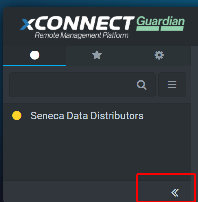
- Access Manage Users or change account role settings
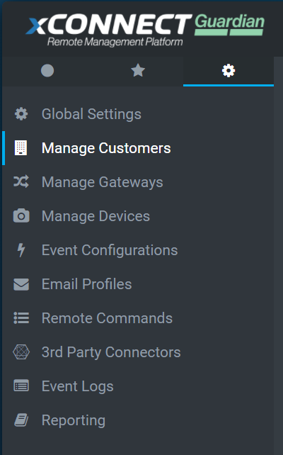
- Batch execute remote commands
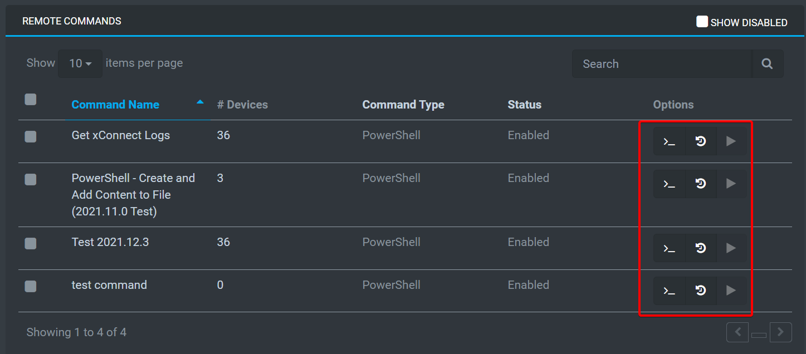
-
Create, edit, disable or activate remote commands
-
Create, edit, disable or activate event configurations
-
Read, create, edit, disable, or active e-mail profiles
-
Read, create, edit, disable, or active 3rd party connectors
-
Assign gateways to customers
-
Access global settings
-
Limited power users will still have the ability to view all dashboards, event logs, access bookmarks, and execute individual remote commands on devices.
-
-
New xConnect API endpoint is available and provides the ability to search by device name.
- Endpoint currently requires the full device name to search properly. See swagger documentation for more details.
Bug Fixes
- Updated all libraries to log4j 2.17.0 in order to address security vulnerabilities.
Release 2021.08.0: August 23rd, 2021
Enhancements
-
Native remote desktop functionality (BETA)
- We are now supporting native remote desktop within the xConnect portal for a subset of BETA customers. This requires an enhanced agent to establish the connection to your monitored device.
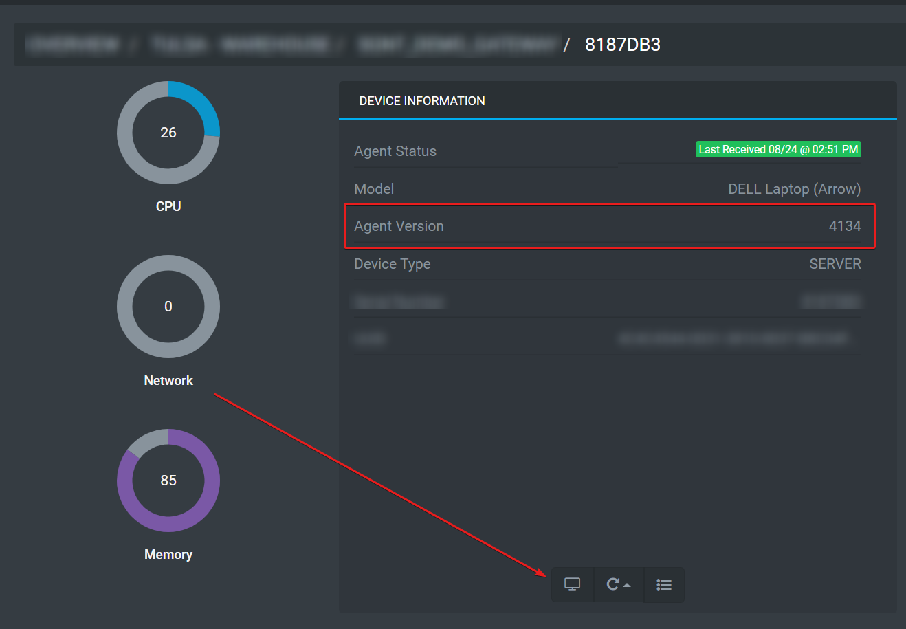
-
Note: This is not yet available to all xConnect customers. For more information, please contact your account manager.
-
Improvements for batch remote command payloads
- In an effort to reduce heavy traffic to the virtualized gateways, we've reduced the amount of payloads sent when a batch command is run via the remote commands section.
Bug Fixes
- General cleanup of browser console errors
- Fixed column headers for manage devices CSV export
- Improvements to telemetry export
- Removed the hard refresh of the web page when switching between app instances
Release 2021.06.0: June 30th, 2021
Enhancements
- Custom event configurations will now show a complete list of impacted devices:
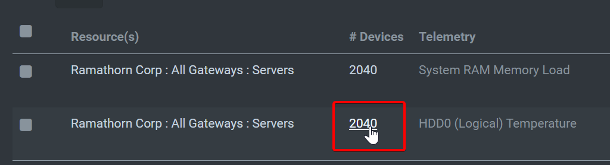 Upon clicking the link, a modal will appear listing all impacted devices
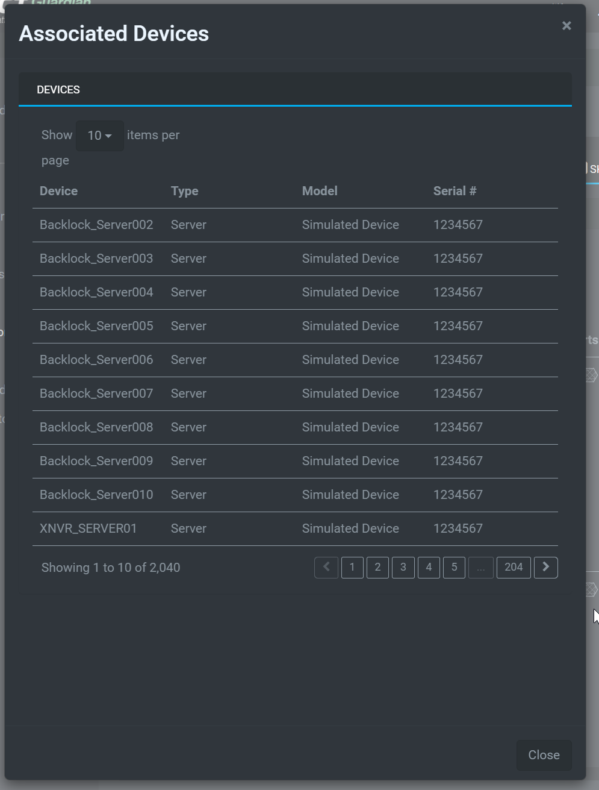
Bug Fixes
- Upon disabling a custom event configuration, any outstanding instances of the event will recover:
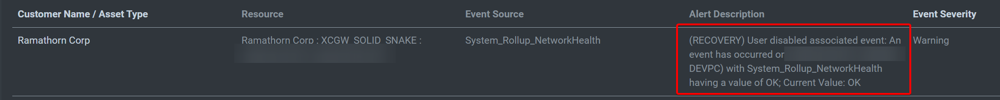
Release 2021.05.0: May 25th, 2021
Enhancements
- Significant performance improvement on reporting latest health. Removal of direct queries on database backend, replaced with caching solution.
- Removal of nested arrays within the remote command and event objects. Improved associations between the commands, events and impacted devices.
Bug fixes
- Fixed erroneous characters found in "IN" query criteria (impacts Remote Commands and Custom Event Configurations)
- Ensure that the login page always renders correctly.
- Gateway modal will now show the correct labeling when a gateway is offline or online.
Release 2021.04.0: April 26th, 2021
Enhancements
- Manual remote command executions are now tracked by the user who initiated the command:
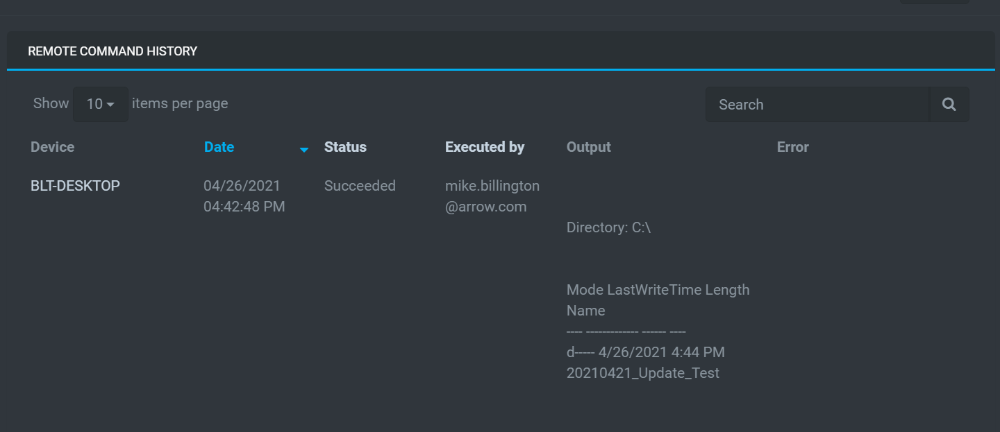
-
Remote commands now supports up to 25,000 characters
-
Support for Azure-based Active Directory authentication method. For more information, please see Azure Authentication docs
Bug Fixes
- Ability to search the "Serial" field using the "IN" operator within the remote commands page:
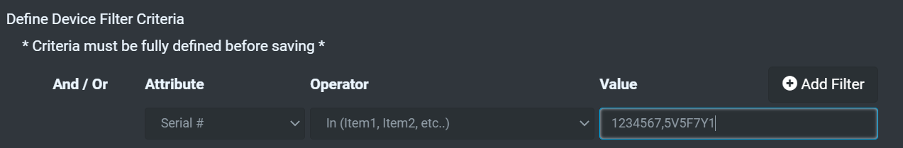
Minor Release 2021.02.5: March 25th, 2021
Enhancements
- Added query operator to Remote Commands and Custom Event Configurations
There is a new operator that will allow you to pull devices based on a comma-separated list of values. The functionality is currently available in the Remote Commands and Custom Event Configuration editors.
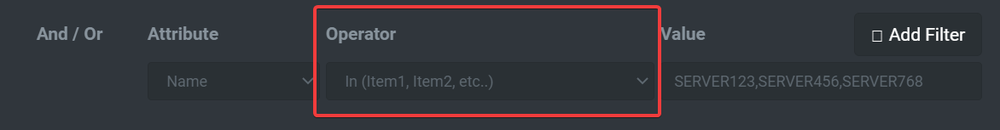
By choosing the "IN" operator, you can specify one or more values to search. In the example above, I am searching for devices with the names "SERVER123", "SERVER456", or "SERVER768" The result would be 3 servers that match those names.
Minor Release 2021.02.4: March 10th, 2021
Enhancements
- Enable or disable the ability to batch execute a remote command
There is a new control on the remote command edit form that will allow you to enable or disable the ability to execute the remote command on many devices.
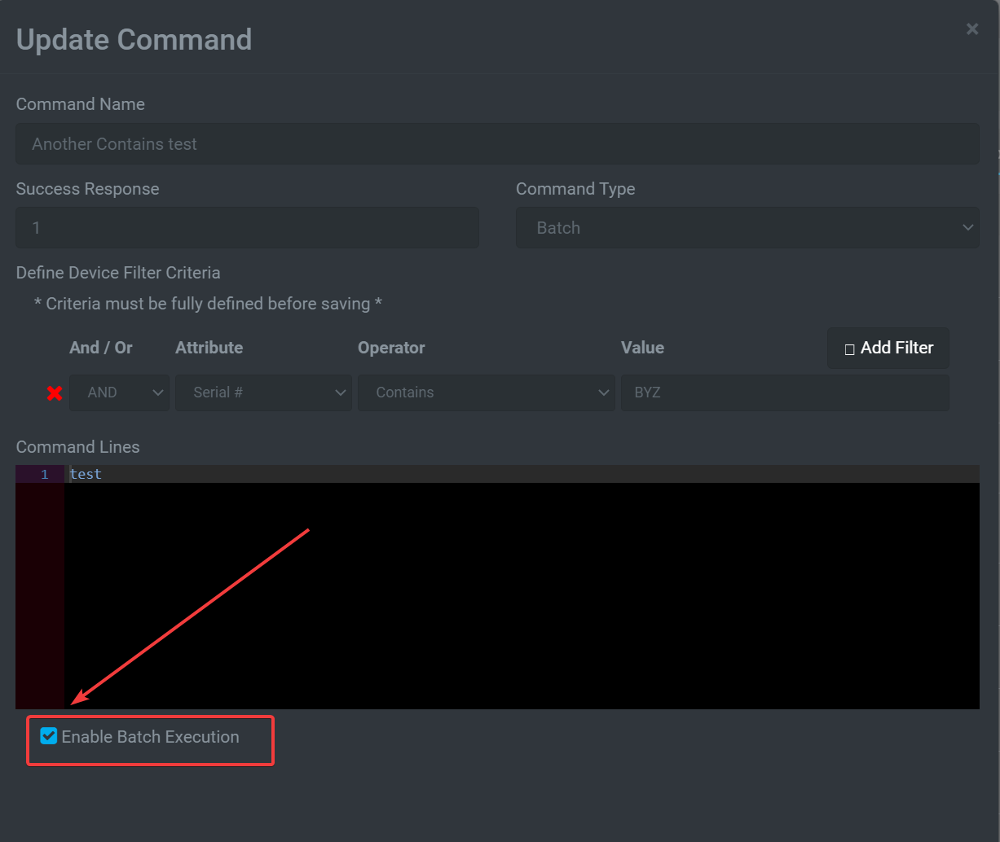
If the command execution is disabled, you will not be able to hit the "play" icon on the remote command grid:
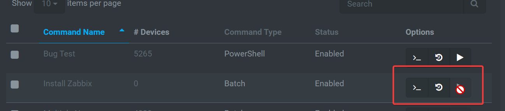
Checking the checkbox control will allow you (or any other power user) to perform a batch execution on the command to the associated devices.
Release 2021.02.0: February 6th, 2021
Enhancements
-
Virtual Gateway Onboarding Wizard
We have added the ability to create virtual gateways within your xConnect instance! Customers with the cloud gateway subscription will now have the option of generating one or many virtual gateways that will act as a centralized gateway for all of your devices.-
Upon logging in to a new account with no gateways or devices, the onboarding wizard will automatically appear
-
At any time, you can open the onboarding wizard by clicking the icon in the header:
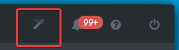
- The initial step of the onboarding wizard will enable you to begin onboarding a new Virtual Gateway or will take you to the physical gateway setup documentation.
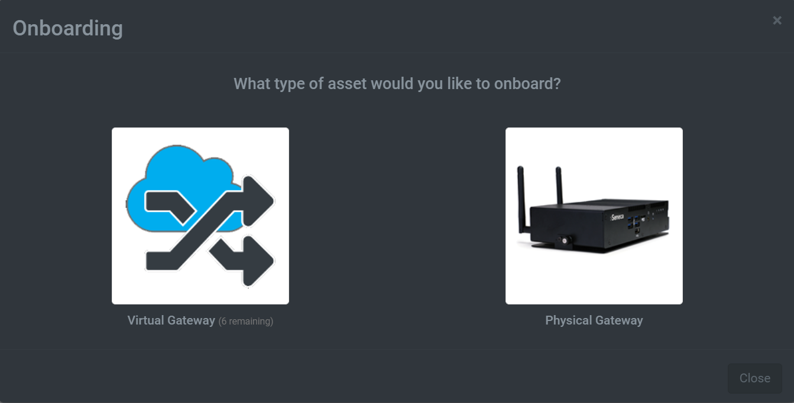
The Virtual Gateway option will be enabled if you have 1 or more available licenses to your account. These licenses can be purchased through your account representative.
- Clicking the Virtual Gateway icon will take you to step 2 of the wizard, you must enter a unique name for your gateway and choose a customer.
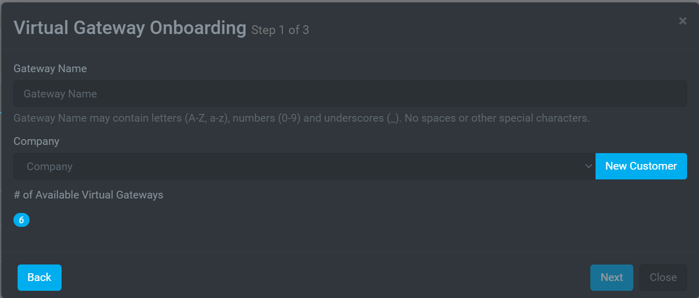
- Once you have chosen the customer and entered a unique gateway, click the "Next" button. The backend processes will begiin allocating your new Virtual Gateway
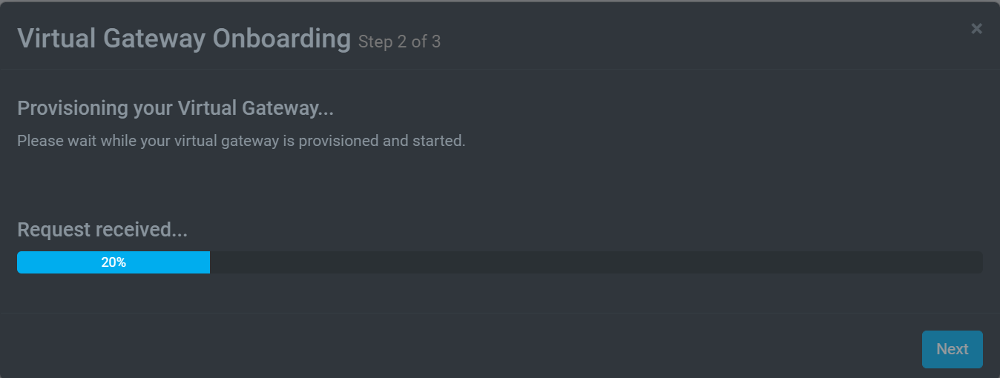
During this time, xConnect is communicating with our cloud-based Docker API instance to spin up a new virtual gateway. If any errors occur you will see it displayed in this window.
- Upon the gateway progress bar hitting 100%, you will be able to access your virtual gateway via the normal xConnect Manage Gateways interface
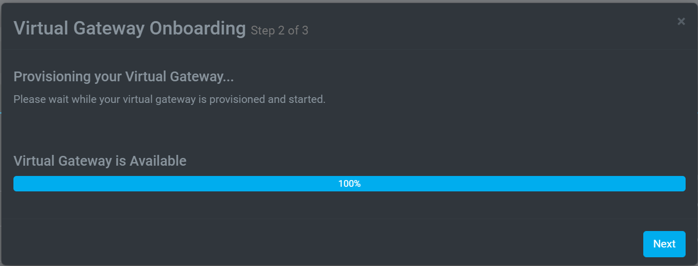
- Once successfully completed, the following message will appear and include the specific URL that you will use on your local agent installations:
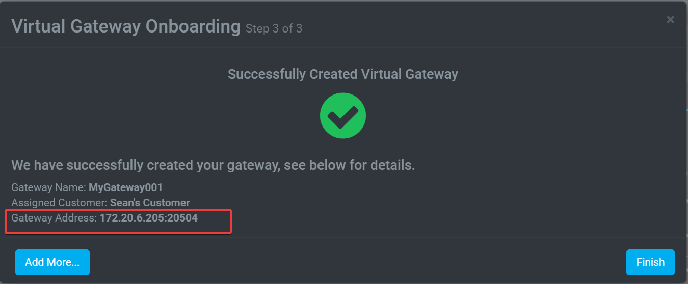
Use the listed GATEWAY ADDRESS on your local xConnect agents to point them to the Virtual Gateway
Configure your local xConnect agents:
- On your local xConnect agent instance, go to http://localhost:8886/settings and enter the gateway address in the settings page:
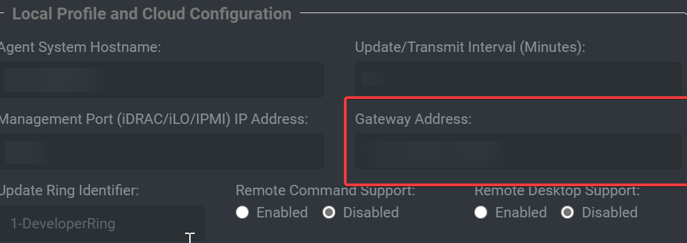
-
-
Automated Device Cleanup
-
We have added an automated device clean up for any devices that have never submitted telemetry and were created over 60 minutes ago. These devices will automatically be removed from your dashboards and side navigation with no manual intervention. Once the device receives telemetry, they will reappear on your xConnect web portal.
-
Device Health Added to Telemetry Report
-
The custom telemetry report now includes the latest health of your devices. 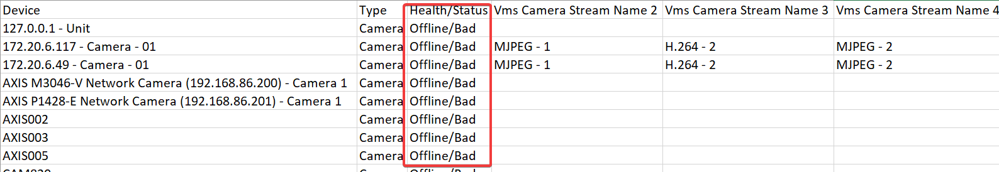
-
Custom Event Configurations Enhanced Filter
- Disabled custom event configurations will now be hidden from the list. You can show the disabled by clicking the checkbox on the header: 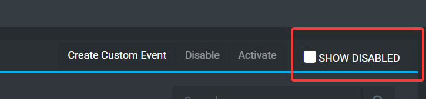
Bug Fixes
-
Redundant click when searching for an end user
-
Updating custom events with associated alerts
- We have added a preventative measure that disallows you from making changes to a custom event configuration if it has active alerts associated with it. As part of a future patch release, we will re-enable this functionality.
Release 2020.12.0: December 17th, 2020
Enhancements
-
Remote Command improvements:
- Filtering has been added to the remote command execution history grid, which will allow you to filter by device name:
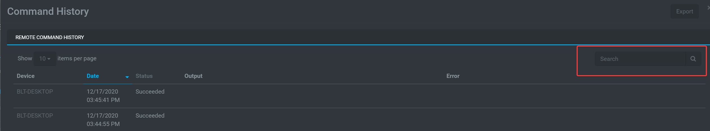
- On the Remote Command history grid, the device names are now links that will take you to the device-specific dashboard:
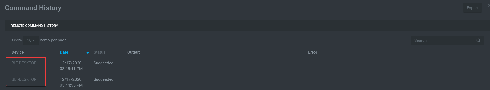
- You can now export the entire execution history of a command as a CSV:
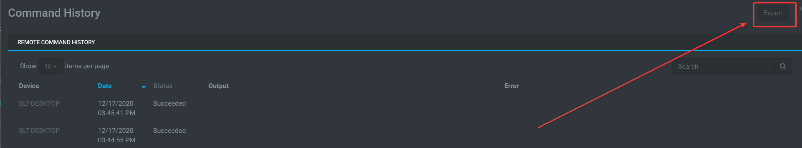
-
Reporting is now available for all power users and can be accessed by the settings menu:
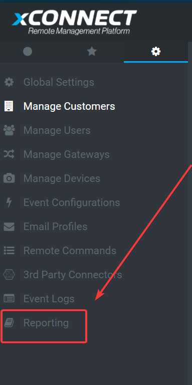
-
Latest device telemetry report is now available for use:
- You can access this by going to the Reporting page.
- Click on the "Telemetry" link in the list.
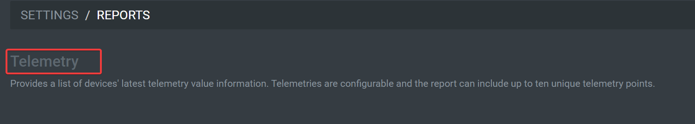
- This will open a modal enabling you to choose 10 or less telemetry points that will be included in the report. The report is a list of all active devices that are filtered by the desired device type.
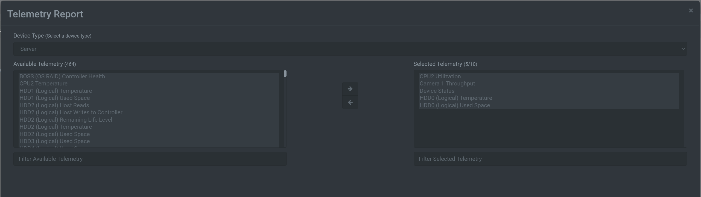
Once your desired settings are selected, click the "CSV" button. This will generate the report as a comma separated file and can be opened in your preferred editor.
Bug Fixes
- Sizing fix for the "Add Customer" modal when assigning a new gateway.
- All remote command buttons on dashboards are now hidden for end user roles. Power users can still access them.
- Copy/paste dashboard URLs are now working correctly.
Release 16.0: December 1st, 2020
Enhancements
- New user experience for Server and Media Player Dashboards
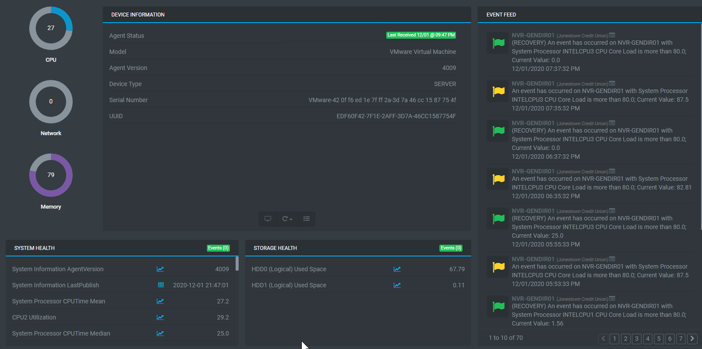
-
Customizable dashboard reboot button
- Users may now customize which command is run upon clicking the reboot button on the dashboards.
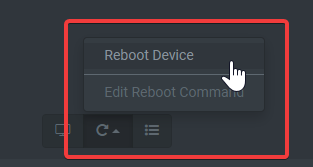
How to edit your command:
- Go to your desired dashboard via the side menu
- Click on the reboot button on the information panel.
- If the menu is plain text, then the admin has not created a default template for you to use yet. If the menu is clickable, you can edit the command by clicking the "Edit Reboot Command" link.
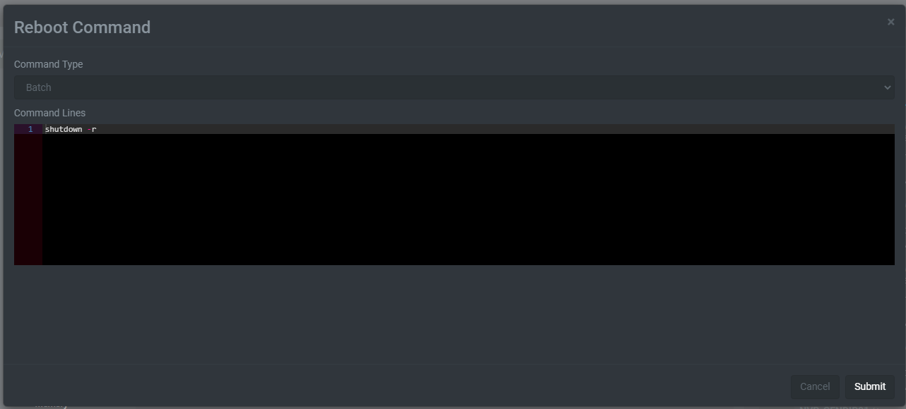
-
Added UUID to the device information panels
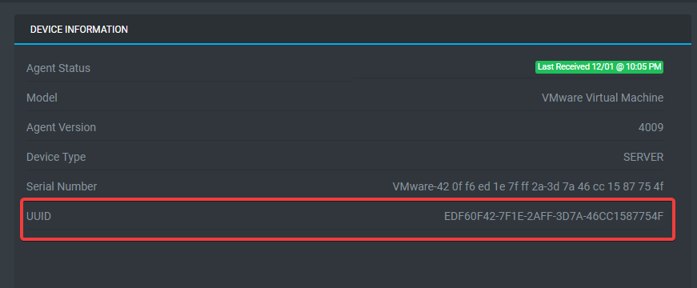
## Bug Fixes - Fix for defining OR criteria on remote command query definitions. - You may now define two or more OR criteria and retrieve your desired devices correctly.
Release 15.0: October 15th, 2020
Enhancements
-
Enhanced Device Selection with Query Builder
- The Remote Command and Custom Event Configuration forms have been modified to support dynamic device queries, which will enable users to easily pull one or many devices based on the following criteria:
- Name
- UID
- Device Type (Media Player, Camera, Server, etc...)
- Model
- Serial #
There is currently no limit on how many filters can be added. NOTE: Any existing custom event configurations or remote commands will have their existing device associations preserved, but you must define a criteria if you edit the command/event. 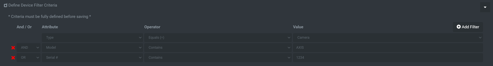
- The Remote Command and Custom Event Configuration forms have been modified to support dynamic device queries, which will enable users to easily pull one or many devices based on the following criteria:
Remote Commands:
You can access the remote command form by going to the Settings tab > Remote Commands. Click Create New Command or the existing name of a command in the grid.
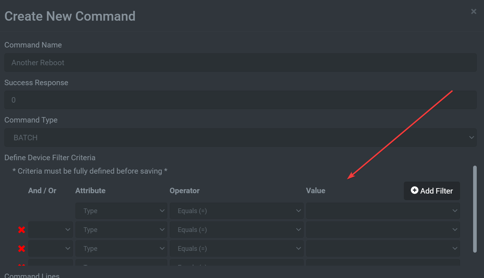
Custom Event Configurations:
You can access custom event configurations by going to the Settings tab > Event Configurations > Custom Configurations
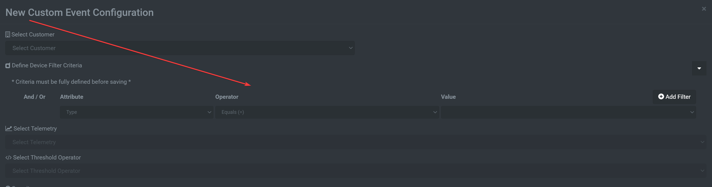
-
Side Menu Paging
- The side menu now features enhanced pagination controls to ensure fast loading of your dashboards. The # of items displayed is driven by the context menu featured by clicking the 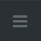 button:
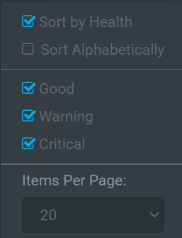
Choose an item from the "Items Per Page" dropdown and the side menu will only show that # of items per page when viewing devices/servers/media players:
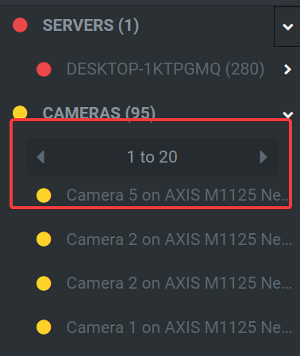
-
Global Search
- We are now supporting global search! You can leverage the side bar search textbox to search across all asset types such as Customers, Gateways, Media Players, Devices, etc... You can perform a search on any dashboard and it will provide you a complete list of matching items.
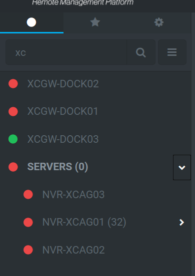
-
Customizable Event Feed
- You can now customize how many events you want displayed on all event feed panels:
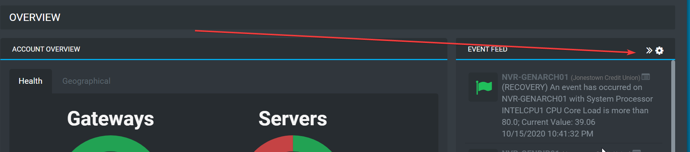
Clicking the gear icon will open a modal enabling you to define how many items you would like displayed on each page:
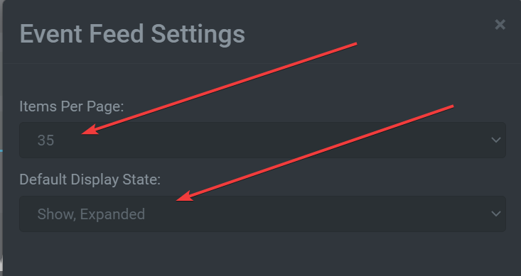
Bug Fixes
- Name of the device is now driven by the hostname sent via the agent.
- Clicking on the bookmark tab preserves your current location on the site.
Release 14.0: September 7th, 2020
Enhancements
-
Remote Command Execution Status Support
- We've added the ability to see the current status of a remote command execution on the device dashboard. 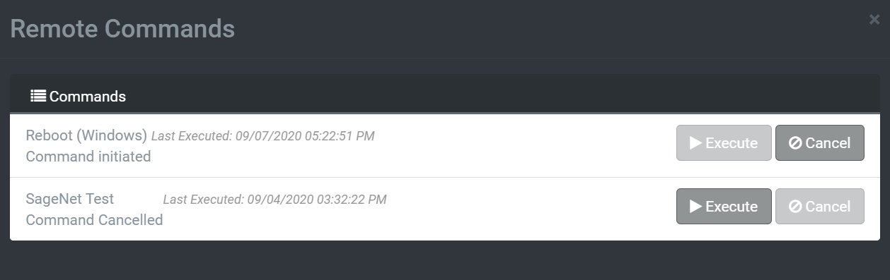 Note: in order to see an accurate status, you must update your xConnect agent to version 4040 or later.
-
Remote Command History
- There is now a complete list of previous executions for a remote command. You can see this by going to Settings > Remote Commands 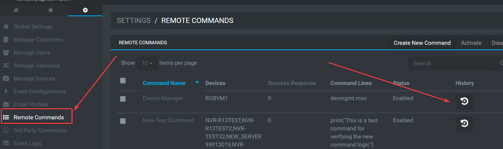
-
Backend Process Improvements
- We've implemented several performance improvements on our backend design to ensure the best user experience possible.
Bug Fixes
- Unlocking a user from Manage Users will now clear out prior bad log in attempts.
- Remote Commands will now fire automatically if assigned to an event.
Release 13.1: July 16th, 2020
Enhancements
- Alert Summary E-mail Support
- We've added the ability to group your e-mail alerts together within a standard summary e-mail template.
How to Enable:
- Log in using your credentials *note: You must be a power user in order to access this functionality
- Click on the Settings tab on the left-side menu
- Click on "Global Settings"
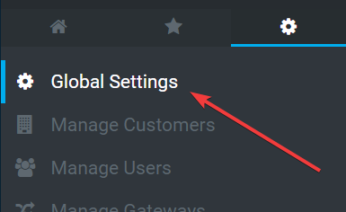
- Upon going to the Global Settings page, check the "Enable Summary Alerting" checkbox and enter one or more e-mail addresses separated by a comma
 - Once finished, click the "Apply" button
- Once finished, click the "Apply" button
- Once enabled, you will no longer receive individual e-mail alerts based on your event configurations. A summarized e-mail will be sent that lists the impacted devices and the criteria of the event.
Bug Fixes
- Newly added devices will now automatically be applied with e-mail alerts, remote commands, or third party connectors based on the enabled Global Event Configurations.
Release 13: June 23rd, 2020
Enhancements
- Event Feed alterations to the navigation links.
- Modified the way the event feed links navigate a user to the appropriate device dashboard and event log listing.
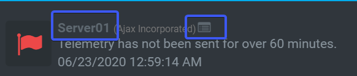
Upon clicking the device name (i.e. Server01) a user will be taken to the device dashboard. Clicking the table icon () will navigate to the filtered event logs for this particular device.
- Company Abbreviation added to all alerting e-mails
- Enables xConnect support to easily identify which e-mail alerts originated from a particular xConnect customer.
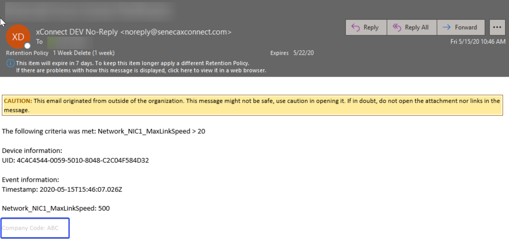
-
Release version # added to the home page, which links to release notes.
-
Maintenance mode: prevents potential spamming of alerts in the occurrence of a scheduled maintenance window. Enhancement prevents users from logging on during the maintenance.
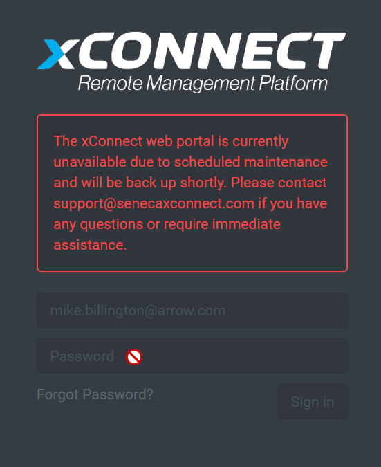
- User preferences now preserves your selections for expanding or collapsing panels on your dashboards.
Bug Fixes
- Event logs now include custom outage duration notices instead of default 60 minute outage windows.